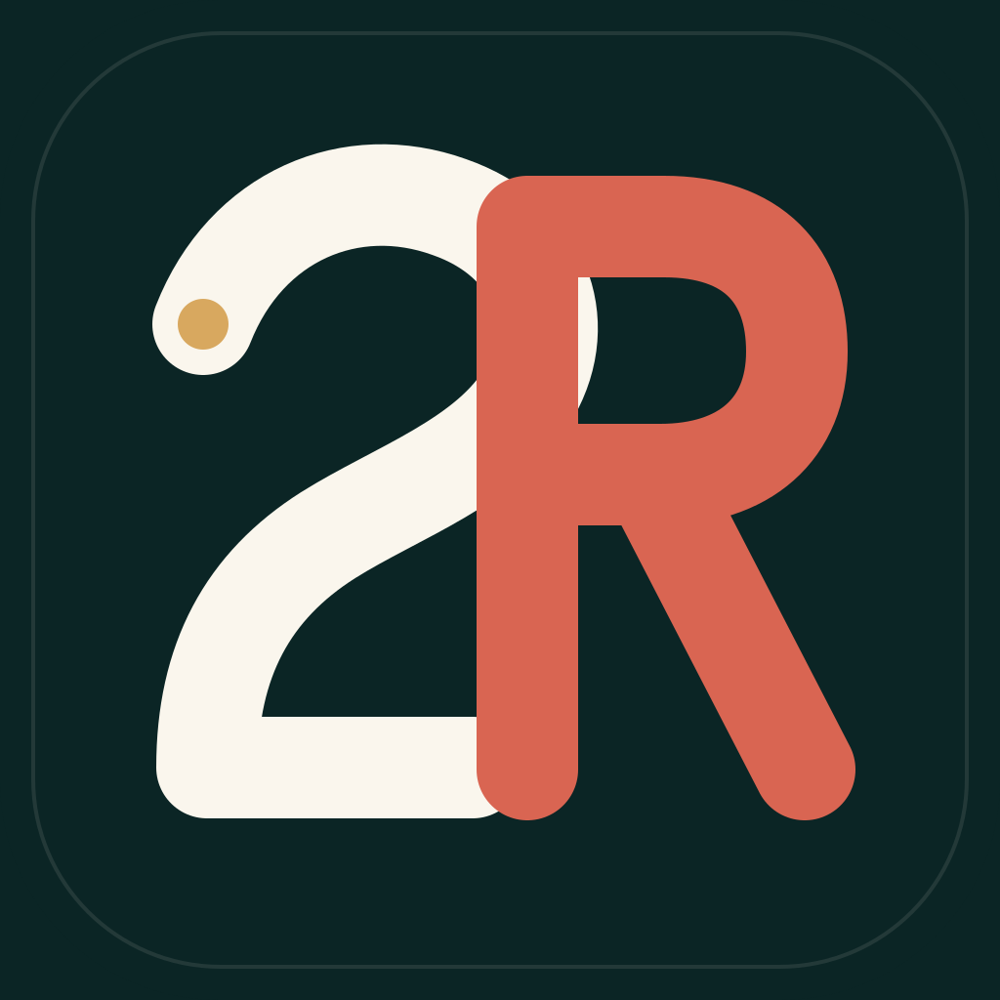
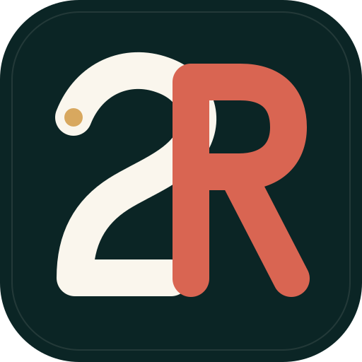
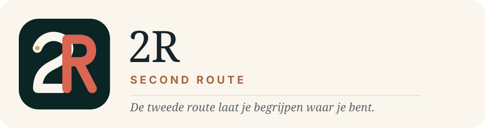
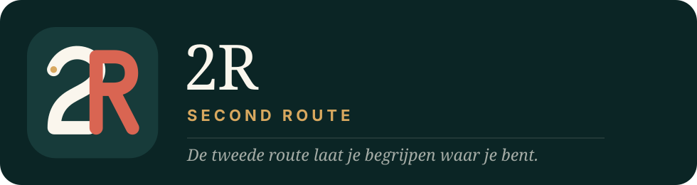
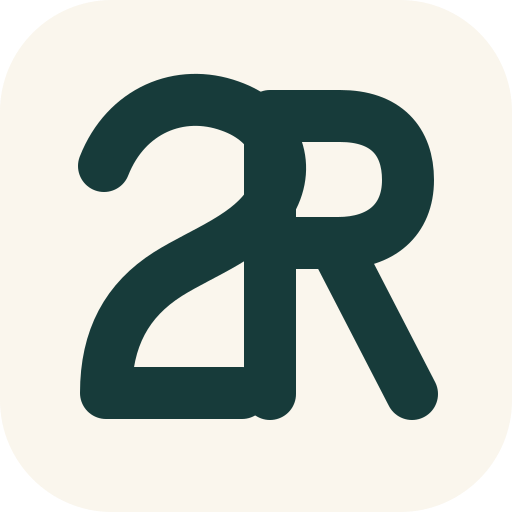
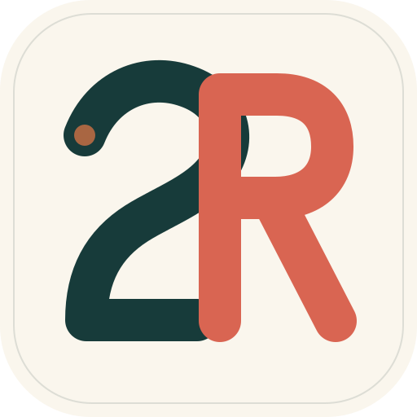

Huidig beeldmerk

Herkenbaar, energiek en eigen — maar visueel druk, digitaal glanzend en moeilijk terug te brengen tot een helder teken.
Niet een nieuw logo om nieuw te zijn. Een volwassen versie van wat er al in 2R verborgen zat: twee routes die elkaar ontmoeten.

De bestaande 2 en R blijven. De routekleuren blijven. Maar glans, lichtbollen, routepinnen, schaduwen en microscopische details verdwijnen. Wat overblijft is een teken dat op 24 pixels even overtuigend moet zijn als op een gevel.

Herkenbaar, energiek en eigen — maar visueel druk, digitaal glanzend en moeilijk terug te brengen tot een helder teken.
Twee routes, één kruising, één vertrekpunt. Vlak, Europees, warm en reproduceerbaar.



één kleur
op papierDe lichte 2 is de route die je aflegt. De koraalkleurige R is de laag van betekenis die 2R eraan toevoegt.
De kleine gouden stip is geen locatiepin. Het is het moment waarop nieuwsgierigheid begint.
De letters raken elkaar bewust. 2R staat niet naast de reis, maar verweeft kennis met de reis.
Dit is sterk genoeg voor een echte merkbeslissing, maar het raakt ook het app-icoon dat bij Apple ligt. Daarom eerst beoordelen, daarna de lettervormen optisch verfijnen en testen op echte telefoons. Pas na jouw akkoord maken we het definitieve vectorpakket en een beheerste overgang voor website, app, Studio en documentatie. Geen half oud, half nieuw 2R.